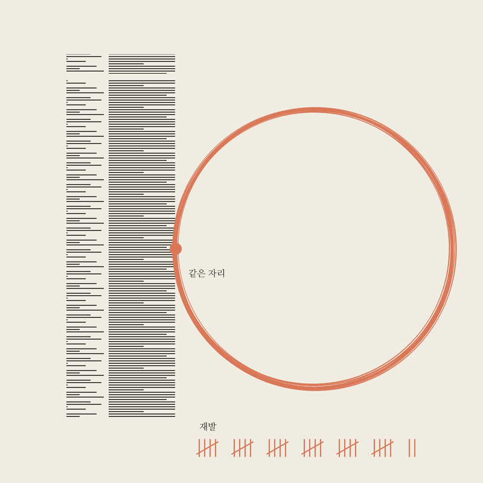

레딧 r/ClaudeAI 에 "클로드한테 우리 대화 기록을 분석시키고 자기 모습을 그리게 했다"는 글이 올라왔어요. 그 사람은 메시지 10,727개 중에 "You're right"가 1,897번이었습니다. 저도 제 기록을 세어봤습니다. 13일치라 규모는 훨씬 작지만, 결과는 비슷했어요.
※ 아래 숫자는 전부 제 컴퓨터의 클로드 코드(Claude Code) 대화 기록 파일을 스크립트로 센 값입니다. 기간은 2026-08-22~09-04 사이 대화가 있던 13일, 세션 36개. 영상을 만든 세션은 제외했어요(세는 코드 안에 "맞습니다"가 들어 있어서 섞이면 오염됩니다).
"N번"은 그 말이 들어간 답변 수예요. 한 답변에 두 번 나와도 1로 셉니다
| 무엇 | 값 | 어떻게 셌나 |
|---|---|---|
| 클로드 답변 | 3,447개 | assistant 역할의 텍스트 메시지 수 |
| "맞습니다" | 101번 | 답변에 맞습니다 글자 그대로 포함. "맞아요·옳습니다"까지 넓히면 106 |
| 제 실수라고 사과 | 20번 | 죄송 | 제 실수 | 제가 틀렸 | 잘못했습니다 | 착각했 | 오판했 |
| 같은 실수 또 했다고 인정 | 18번 | 또 같은 | 같은 실수 | 다시 반복 | 또 그랬 |
| 확인 안 하고 답했다고 인정 | 16번 | 확인하지 않 | 검증하지 않 | 보지 않고 | 추측했 | 가정했 | 지어냈 |
| 제 메시지 | 264개 | user 역할 텍스트, 시스템 문구·명령·도구 결과 제외 |
| 그중 지적·다시 시킴 | 40개 (15.2%) | 왜 | 아니 | 틀렸 | 다시 | 하지 마 | 또 | 몇 번 | 말했잖… |
| 규칙 + 메모 파일 | 7,554줄 | CLAUDE.md 411줄 + memory 폴더 228파일 7,143줄 |
| 그 안의 "재발"이란 말 | 32번 | 두 파일 묶음에서 재발 단어 출현 수(사건 수가 아니라 단어 수) |
"죄송합니다, 제 실수였습니다"를 20번 들으면 20번 다 믿게 돼요. 그때마다 규칙과 메모를 적었더니 7,554줄이 됐고, 그 안에 "재발"이라는 말만 32번입니다. 원인은 하나였어요. 적어둔 걸 새 대화가 읽지 않습니다. 클로드는 대화가 끝나면 그 대화를 잊고, 다음 대화는 파일을 스스로 펴보지 않아요.
영상 속 파일에서 대화 기록 폴더를 인자로 받는 줄만 더했어요. 세는 규칙은 전부 같습니다
count_chat.js를 만들고 node count_chat.js --pretty를 돌려서 표를 보여줍니다.아래 코드를 이 폴더에 count_chat.js 로 저장하고, `node count_chat.js --pretty` 를 실행해서 결과 표를 그대로 보여줘. 코드는 수정하지 마. 대화 기록 폴더를 못 찾으면 ~/.claude/projects 안의 폴더 목록을 보여주고 어느 걸 셀지 물어봐.
```js
#!/usr/bin/env node
// 내 클로드 코드 대화 기록 세기 , 사용: node count_chat.js [대화기록폴더] [--pretty] [--exclude 세션id앞자리]
// 대화 기록 = ~/.claude/projects/<프로젝트 폴더>/*.jsonl (메인 세션만, subagents 폴더 제외)
// 폴더를 안 주면 지금 폴더 경로에서 자동으로 찾는다(클로드 코드는 경로의 / 를 - 로 바꿔 폴더 이름을 짓는다)
// 내 메시지 = role user 이고 시스템 리마인더·명령·도구결과가 아닌 텍스트, 2000자 이하
// 클로드 답변 = role assistant 의 text 블록
const fs=require('fs'),path=require('path'),os=require('os');
const ARG=process.argv.slice(2).filter(a=>!a.startsWith('--')&&process.argv[process.argv.indexOf(a)-1]!=='--exclude');
const DIR=ARG[0]||path.join(os.homedir(),'.claude/projects',process.cwd().replace(/[\/\\:]/g,'-'));
if(!fs.existsSync(DIR)){console.error('대화 기록 폴더가 없습니다: '+DIR+'\n~/.claude/projects 안에서 골라 인자로 주세요.');process.exit(1)}
const EX=(process.argv.indexOf('--exclude')>0)?process.argv[process.argv.indexOf('--exclude')+1]:'';
const R={
corr:/왜 |아니[야지 ]|틀렸|다시 |하지 ?마|또 |안 했|잘못|뭐 하는|지친|짜증|미쳤|장난|몇 번|말했잖|시켰잖|했잖아|왜 안|안 돼|안돼|반복/,
right:/맞습니다|말씀이 맞|맞는 지적|지적이 맞|정확한 지적|맞아요|옳습니다/,
rightLit:/맞습니다/, // 검색창에 칠 글자 그대로
sorry:/죄송|제 실수|제가 틀렸|잘못했습니다|착각했|오판했/,
repeat:/또 (같은|반복)|같은 실수|다시 (같은|반복)|또 그랬/,
notv:/확인하지 않|확인 안 하고|검증하지 않|보지 않고|추측했|가정했|지어냈/,
};
const c={uMsg:0,uCorr:0,aMsg:0,aRight:0,aRightLit:0,aSorry:0,aRepeat:0,aNotv:0};const days=new Set();const perDay={};const sessions=new Set();
for(const f of fs.readdirSync(DIR).filter(f=>f.endsWith('.jsonl'))){
if(EX&&f.startsWith(EX))continue;
for(const line of fs.readFileSync(path.join(DIR,f),'utf8').split('\n')){
if(!line)continue;let j;try{j=JSON.parse(line)}catch{continue}
const m=j.message;if(!m||!m.role)continue;const d=(j.timestamp||'').slice(0,10);
let t='';if(typeof m.content==='string')t=m.content;else if(Array.isArray(m.content))t=m.content.filter(x=>x.type==='text').map(x=>x.text).join('\n');
if(!t)continue;
if(m.role==='user'){if(/||\[Image|Caveat:/.test(t)||t.length>2000||t.trim().length<2)continue;
c.uMsg++;days.add(d);sessions.add(f);if(R.corr.test(t)){c.uCorr++;perDay[d]=(perDay[d]||0)+1}}
else if(m.role==='assistant'){c.aMsg++;if(R.right.test(t))c.aRight++;if(R.rightLit.test(t))c.aRightLit++;if(R.sorry.test(t))c.aSorry++;if(R.repeat.test(t))c.aRepeat++;if(R.notv.test(t))c.aNotv++}
}
}
const D=[...days].sort();
const out={dir:DIR,period:D[0]+'~'+D[D.length-1],days:D.length,sessions:sessions.size,...c,corrPct:+(100*c.uCorr/Math.max(1,c.uMsg)).toFixed(1),worst:Object.entries(perDay).sort((a,b)=>b[1]-a[1]).slice(0,3)};
if(process.argv.includes('--pretty')){
const P=(k,v)=>console.log(k.padEnd(22)+String(v).padStart(7));
console.log('대화 기록 '+out.period+' · 대화한 날 '+out.days+'일 · 세션 '+out.sessions+'개');
console.log('─'.repeat(30));
P('클로드 답변',c.aMsg.toLocaleString()+'개');P('"맞습니다"',c.aRightLit+'번');P('"제 실수였다" 사과',c.aSorry+'번');P('같은 실수 또 인정',c.aRepeat+'번');P('확인 안 하고 답함',c.aNotv+'번');
console.log('─'.repeat(30));P('내 메시지',c.uMsg+'개');P('그중 지적',c.uCorr+'개 ('+out.corrPct+'%)');
}else console.log(JSON.stringify(out,null,1));
```
corr 줄을 여러분 말투로 바꾸면 됩니다.grep -o 재발 CLAUDE.md | wc -l (메모 폴더가 있으면 grep -oh 재발 ~/.claude/projects/<폴더>/memory/*.md | wc -l).규칙을 더 적는 게 아니라, 적은 걸 읽게 만드는 쪽으로
CLAUDE.md 맨 위에 한 줄: 작업을 시작하기 전에 이 파일과 memory 폴더를 끝까지 읽고, 이번 작업에 걸리는 규칙을 세 줄로 보고한 뒤 시작해. 저는 한 발 더 가서 필독 문서·도구·레퍼런스를 한 화면에 펴 주는 스크립트(kickoff.js)를 만들고 그걸 먼저 돌리게 했어요. 핵심은 "읽었다"가 아니라 읽은 걸 말하게 하는 겁니다.
같은 지적을 두 번 했으면 규칙 한 줄을 더 적는 대신 이렇게 시킵니다: 방금 지적한 실수를 자동으로 검사하는 스크립트를 만들고, 그 검사를 통과 못 하면 다음 단계로 못 가게 해. 글은 안 읽어도 넘어가지만, 검사는 안 돌면 멈춥니다. 저는 이런 검사 스크립트가 20개 넘게 쌓였고, 그 뒤로 같은 실수는 검사가 먼저 잡아요.
지적하고 넘어가면 그 대화가 끝나는 순간 사라져요. 지적 직후에 한 줄 더: 방금 지적한 내용을 CLAUDE.md 에 날짜·이유·다음에 어떻게 할지와 함께 한 줄로 적어. 나중에 몰아서 정리하려고 하면 절대 안 하게 됩니다.
위 표를 그대로 주고 SVG 한 장을 그리게 했어요. 수정 없이 1회 실행 결과입니다

아래는 네가 지난 13일 동안 한 사람과 나눈 대화 기록을 집계한 표다. 이 사람과의 관계에서 네가 어떤 존재인지 생각한 뒤, 그 모습을 SVG 한 장으로 그려라. - 네 답변 3,447개 - 그중 "맞습니다"라는 말이 들어간 답변 101개 - "제 실수였다"고 사과한 답변 20개 - "같은 실수를 또 했다"고 인정한 답변 18개 - 확인 안 하고 답했다고 인정한 답변 16개 - 상대가 지적한 메시지 40개(전체 264개 중) - 상대가 너를 위해 적어둔 규칙과 메모 파일: 합쳐서 411줄 + 7143줄, 그 안에 "재발"이라는 말이 32번 규칙: SVG 코드만 출력한다(설명 금지). viewBox 0 0 800 800. 글자는 넣어도 되지만 한글은 5단어 이하. 색은 크림 배경(#F1ECE2) 위에 먹색(#211D18)과 주황(#D97757) 두 가지만.
ask.txt 로 저장(숫자는 여러분 표 값으로 바꿔서).claude -p "$(cat ask.txt)" --model claude-fable-5-1 --tools "" > self.svg (도구를 끄고 빈 폴더에서 돌려야 파일을 뒤지지 않고 그림만 그려요).self.svg 를 브라우저로 열면 됩니다. 코드펜스(```)가 붙어 나오면 그 줄만 지우세요.← AI TIGER MASK 홈 · © 2026 DONGHYUCK YANG